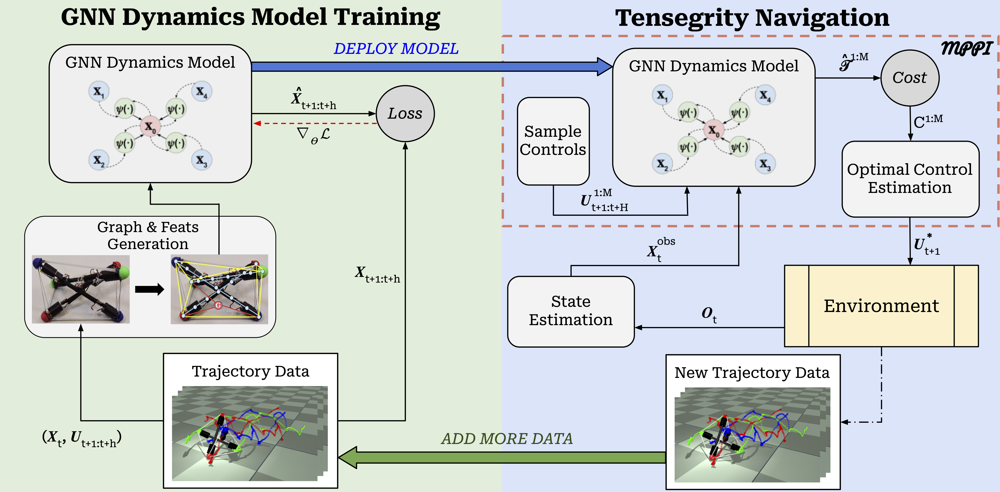

Five MuJoCo navigation tasks used to evaluate the proposed MPPI controller: flat obstacle course, incline, narrow corridor, low-clearance structure, and a composite 3D obstacle course (unseen during training).
Tensegrity robots offer lightweight, compliant mobility over challenging terrain but remain difficult to model and control due to complex contact-rich dynamics and partial observability. This work presents a model predictive path integral (MPPI) controller for a three-bar tensegrity robot driven by a learned graph neural network (GNN) dynamics model. We first extend prior GNN-based models with a differentiable contact detection module, allowing the dynamics model to reason over non-horizontal planar terrains, obstacles, and self-collisions. The learned dynamics model and the MPPI controller then operate in a closed data-collection loop, iteratively improving model accuracy and control performance. We further introduce a hybrid MPPI strategy that combines MPPI with turning motion primitives to improve maneuverability. Experiments in MuJoCo across five navigation tasks— wall obstacles, inclines, narrow corridors, low-clearance structures, and a composite 3D obstacle course—demonstrate that the hybrid MPPI controller outperforms A*-based re-planning and MPPI-only variants, enabling robust tensegrity navigation in complex, contact-rich environments.

Left: The GNN dynamics model is trained on trajectory data—given a state and a sequence of controls, the model predicts future states and is updated via gradient descent. Right: The trained GNN serves as the internal predictive model for an MPPI controller. M sampled control sequences are rolled out in parallel; the MPPI algorithm computes importance-weighted optimal controls. Newly collected trajectories are added back to the training dataset, closing the loop.
A graph neural network models the tensegrity as nodes (rod end-caps, environment surfaces) connected by body, cable, and contact edges. A differentiable contact detection module computes signed distances, surface normals, and relative velocities, encoding them as node and edge features to capture non-horizontal terrain, wall, and self-collision interactions.
MPPI samples M candidate control sequences, rolls them out through the GNN, and computes importance-weighted optimal controls. A hybrid strategy supplements MPPI with human-engineered clockwise/counter-clockwise turning primitives when the robot heading is misaligned with the cost gradient, enabling effective turning that pure MPPI struggles to discover.
The workspace is discretized into a collision-aware grid graph. A wavefront search propagates obstacle-aware cost-to-go values from the goal, providing a meaningful cost function for MPPI in cluttered environments where naive Euclidean distance would favor infeasible straight-line paths through obstacles.
The GNN and MPPI controller are jointly improved over multiple iterations. The model is bootstrapped from motion-primitive trajectories, then updated each iteration using trajectories collected by the deployed MPPI controller, progressively expanding the training distribution to cover more contact-rich scenarios.
Each controller is evaluated across 30 trials per task per iteration. The GNN is only trained on courses (i)–(iv); the 3D obstacle course is unseen during training.
| Method | Iter 0 SR ↑ | Iter 0 Time ↓ | Iter 3 SR ↑ | Iter 3 Time ↓ |
|---|---|---|---|---|
| Flat Obstacle Course (time limit: 1200s) | ||||
| A* + Grid Wavefront | 0% | 1200s | 100% | 741s |
| A* + Motion Prim. Heuristic | 7% | 1184s | 100% | 452s |
| MPPI only | 0% | 1200s | 37% | 1087s |
| Hybrid MPPI (ours) | 0% | 1200s | 100% | 650s |
| Incline Course (time limit: 600s) | ||||
| A* + Grid Wavefront | 0% | 600s | 0% | 600s |
| A* + Motion Prim. Heuristic | 0% | 600s | 0% | 600s |
| MPPI only | 0% | 600s | 33% | 300s |
| Hybrid MPPI (ours) | 100% | 282s | 100% | 193s |
| Narrow Corner & Passageway (time limit: 400s) | ||||
| MPPI only | 0% | 400s | 30% | 380s |
| Hybrid MPPI (ours) | 70% | 313s | 80% | 310s |
| Low Clearance Structure (time limit: 120s) | ||||
| MPPI only | 0% | 120s | 73% | 78s |
| Hybrid MPPI (ours) | 67% | 97s | 77% | 71s |
| 3D Obstacle Course — Unseen (time limit: 900s) | ||||
| MPPI only | 0% | 900s | 35% | 841s |
| Hybrid MPPI (ours) | 27% | 868s | 84% | 747s |
SR = Success Rate. A* baselines are not evaluated on narrow, low-clearance, and 3D courses as they require intentional contact.
@inproceedings{anonymous2025tensegrity,
title = {Model Predictive Control of Tensegrity Robots
via Contact-Aware Graph Neural Dynamics Model},
author = {Anonymous Authors},
booktitle = {IEEE/RSJ International Conference on
Intelligent Robots and Systems (IROS)},
year = {2025},
note = {Under Review}
}